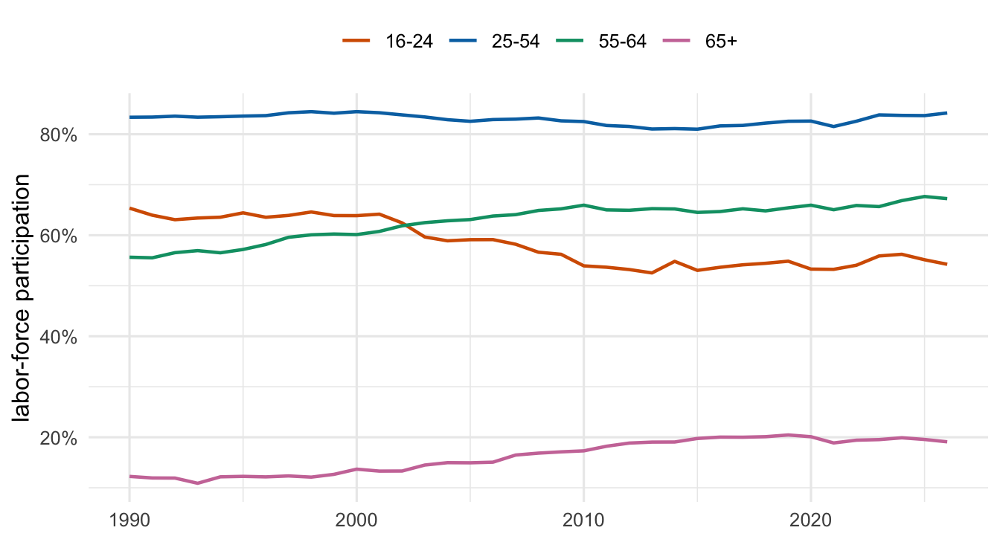
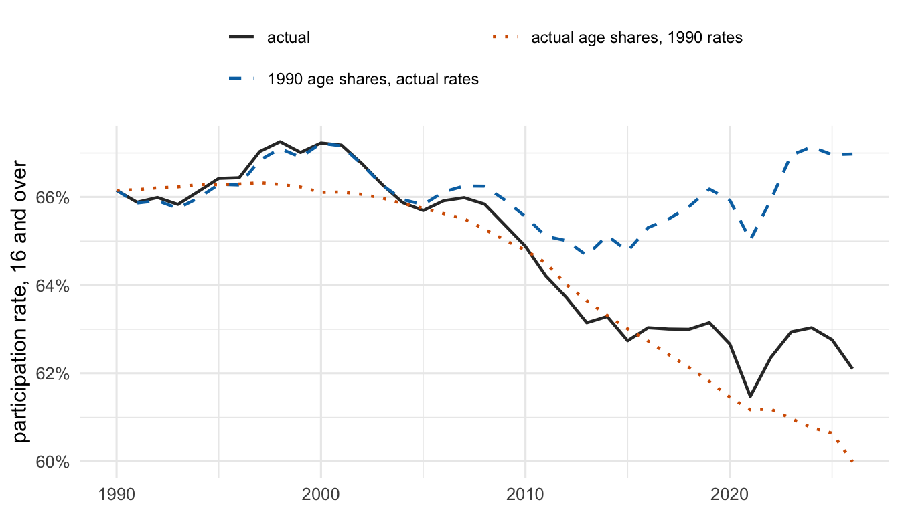

adults |>
group_by(year, age_group) |>
summarise(lfp = weighted.mean(in_lf, wtfinl),
population = sum(wtfinl))Participation fell, nobody stopped working
US labor-force participation is down four points since 1990, and up inside every age group over 25
labor market
data visualization
IPUMS CPS
Participation is down four points since 1990. It is up inside every age group over 25. The difference is the age structure of the country.
The share of Americans aged 16 and over who are working or looking for work fell from 66.2 percent in March 1990 to 62.1 percent in March 2026. Over the same 36 years, participation rose in every age group above 25. Both statements come from the same 3.6 million CPS records, and the distance between them is the age structure of the country.
The data
Every March Basic Monthly sample from IPUMS CPS between 1990 and 2026, with age, labor-force status and the person weight WTFINL. The CPS is a sample, and its weights exist to make that sample stand for the population, so every rate here is weighted:
The universe is people 16 and over whose labor-force status is defined, which is what LABFORCE in (1, 2) selects. Weighting is not a formality here. The unweighted participation rate for March 2026 is 59.3 percent against a weighted 62.1, because people over 65 are 28.9 percent of the interviewed sample and 23.4 percent of the population. Older people answer the survey more often, and the CPS sample has shrunk from 112,130 adults in 1990 to 73,712, so the correction has grown.
Participation inside each age group

Workers aged 25 to 54 participate at 84.2 percent, against 83.4 percent in 1990. The 55 to 64 group went from 55.6 to 67.2 percent, and participation after 65 rose from 12.2 to 19.1 percent. The one group that pulled back is the youngest, down 11.1 points, most of which is school enrollment rather than idleness, though this extract cannot separate the two.
The population behind the rates
People over 65 were 15.4 percent of the adult population in 1990 and are 23.4 percent now. The prime-age group fell from 55.8 to 47.3 percent. Since participation after 65 is around a fifth and participation between 25 and 54 is above four fifths, that reshuffling moves the national average on its own, without anyone changing their mind about work.
Splitting the two apart

Freeze the age structure at its 1990 shares and let participation move as it actually did: the rate ends at 67.0 percent, slightly above where it started. Freeze participation instead and let only the age structure move: the rate falls to 60.0 percent. The entire decline in the headline number, and more, is demographics.
The actual line sits above the demographics-only line, which is the interesting residual. The groups gaining population share are the same ones raising their participation, so older Americans working longer has offset about 2.1 points of what aging would otherwise have taken out.
Caveats
Each point is one March, so 2021 carries the pandemic and single months are noisier than annual averages. The CPS reweights to new population controls after each census, which puts small breaks in the series around 2000, 2010 and 2020. And a shift-share split like this one describes an accounting identity, not a cause: it says how much of the change sits in the age structure, not why the age structure moved or why 60-year-olds now work.
Both scripts are in R/. IPUMS licensing does not allow redistributing microdata, so data/raw/ stays out of the repository and only the aggregated table in data/derived/ is committed. Data from IPUMS CPS, accessed 28 September 2026.